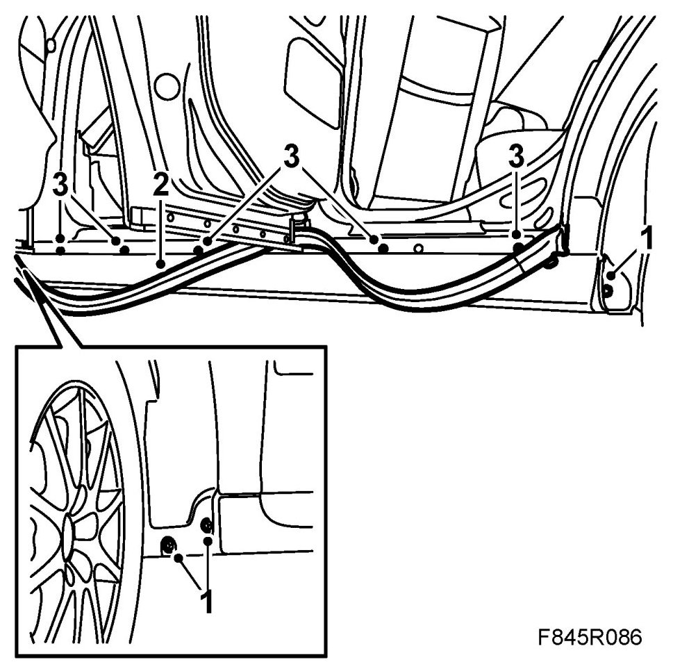
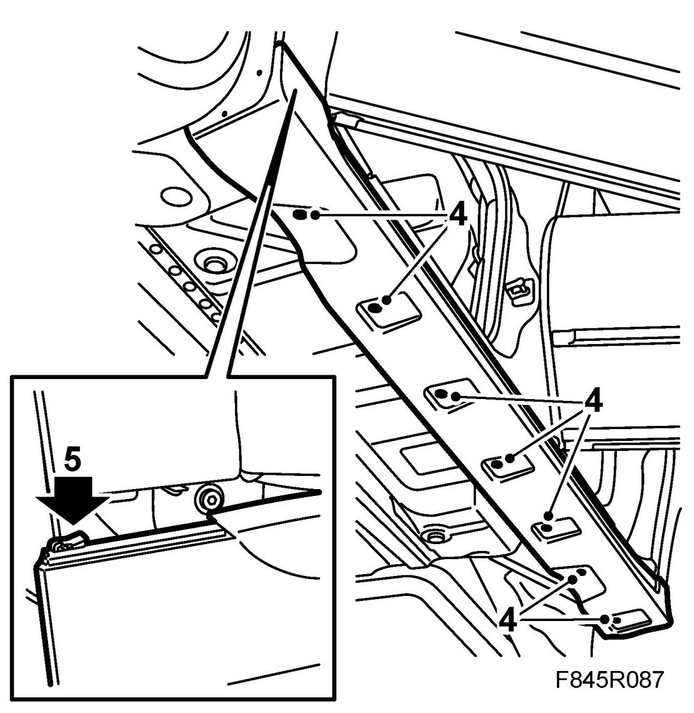
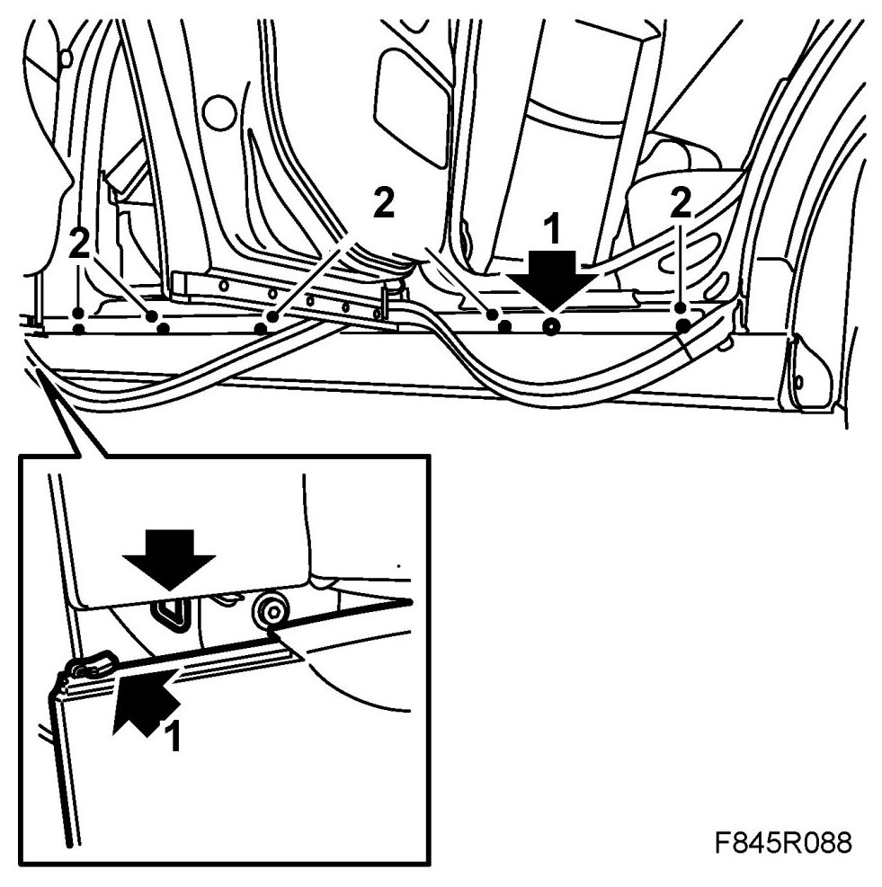
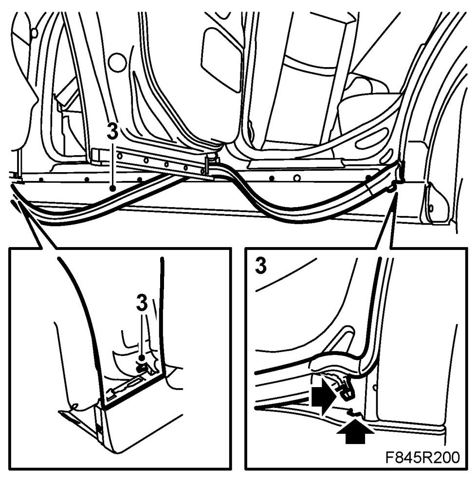
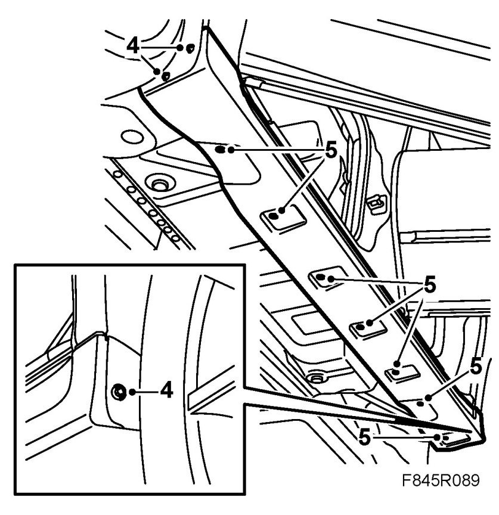

Sill Cover
Sill Cover
To remove
1. Remove the bolts in the wheel housing.

2. Loosen the sill cover rubber moulding. Do not pull off the clip at the front.
3. Remove the sill cover bolts behind the rubber moulding.
4. Remove the clips by tapping up the centre pin in the clip and then pulling down the clip.

5. Loosen the clips in the rear door aperture. Lift out the rear edge of the sill cover. Push forward the cover to release the catch from the front wing. Keep the clip centre pins safe.
To fit
1. Hook in the cover to the front wing and make sure that the front wing's guide tab aligns into the cover's grooves.
9-3X: Guide in the front and rear wing mouldings in the cover's grooves.
Lift up the rear edge and guide in the clip at the rear door.

2. Fit the bolts behind the rubber moulding.
3. Press the rubber moulding in place and fit its rubber clip in the rear sill cover. Check that the rubber clip sits correctly in the front edge.

4. Fit the cover bolts in the wheel housing.

5. Fit the clip and tap in the centre pin. Check the fit of the sill cover.